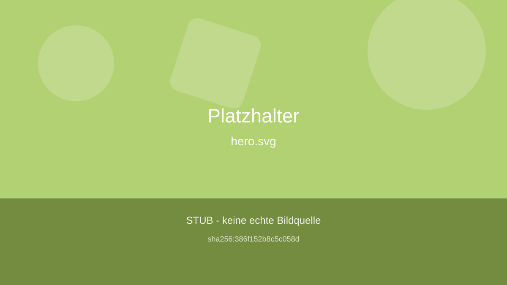
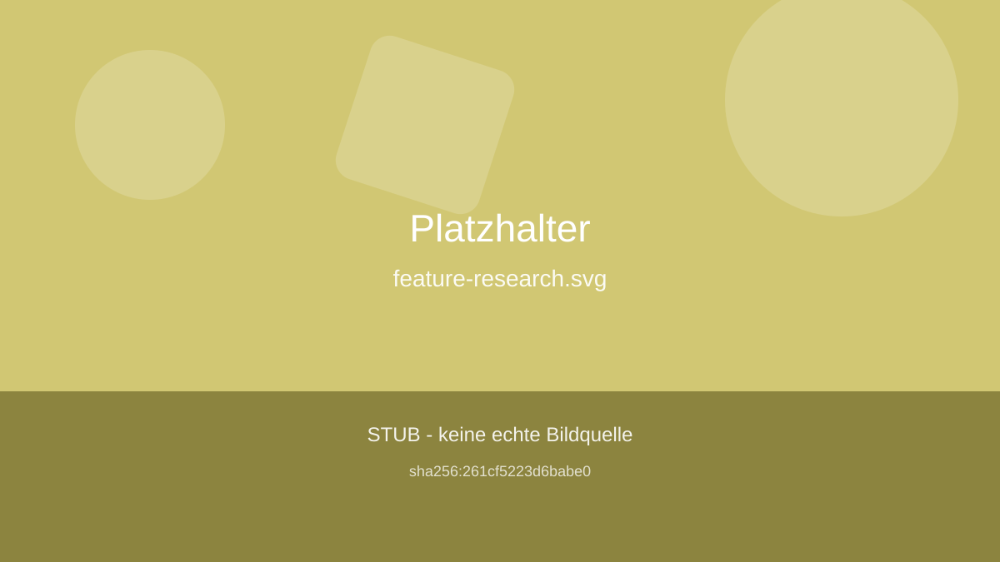
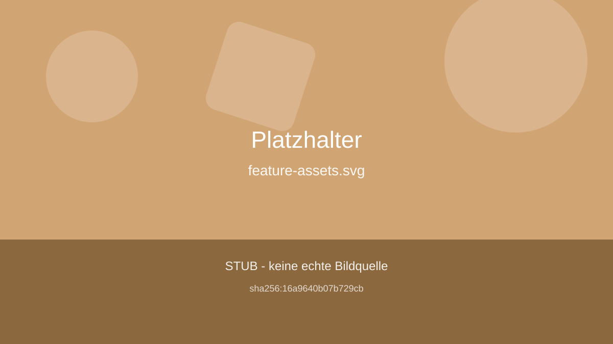
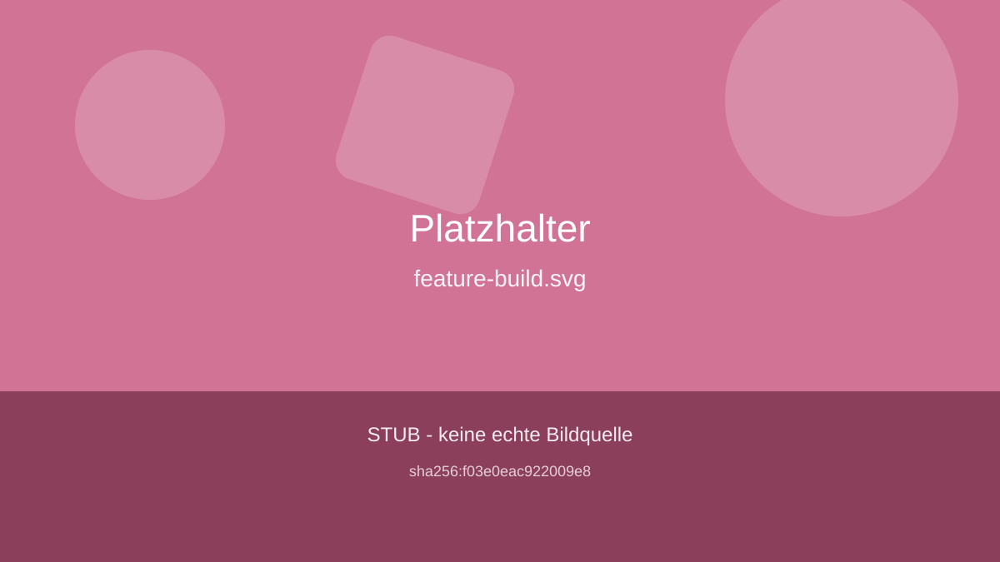
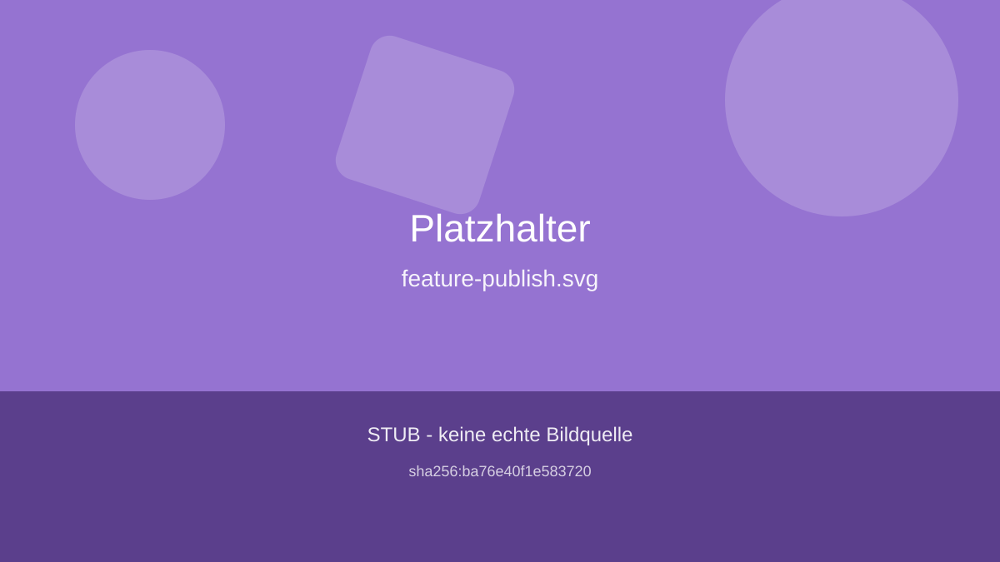
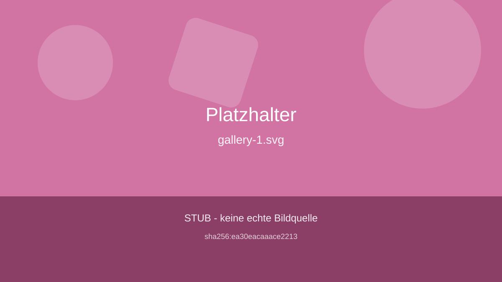
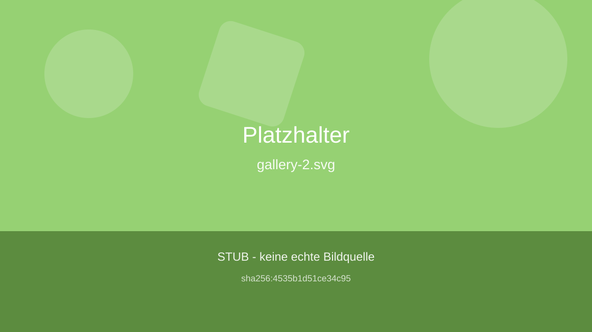
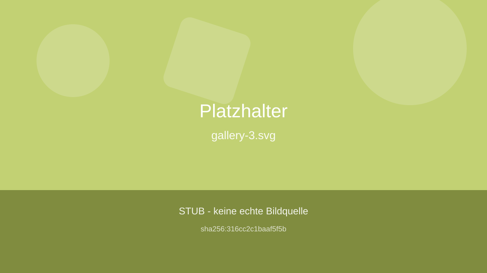

Websites bauen - offline, ohne Credentials
Dieses Beispiel zeigt den kompletten /goal-Build: research, assets, build, publish. Alles laeuft lokal, es werden keine externen APIs angesprochen.
Funktionen ansehen
Was das Skelett kann

Lokale Recherche
Liest Markdown, Text und JSON aus dem inputs-Ordner und schreibt research.json.

Deterministische Assets
Erzeugt reproduzierbare Platzhalter-SVGs aus dem Spec - gleicher Name, gleiche Bytes.

Echter Build
Rendert HTML, CSS und JS aus Spec und Assets in den dist-Ordner.

Ehrliches Publishing
Veroeffentlicht nichts, schreibt stattdessen eine Anleitung als PUBLISH-STUB.md.
So laeuft der Build
Phase research liest nur lokale Dateien. Eine Web-Recherche ist bewusst nicht implementiert, weil die noetigen API-Credentials auf diesem Host fehlen.
Phase assets erzeugt Platzhalter-Grafiken. Die Vorlage traegt die Aufschrift STUB, damit nichts als echtes Bild missverstanden wird.
Phase build ist die einzige Phase ohne Stub: aus Spec und Assets entstehen eine statische Seite, ein Stylesheet und ein kleines Skript.
Phase publish schreibt dist/PUBLISH-STUB.md mit Anleitung und laesst das Internet unangetastet.
Platzhalter-Galerie



Jetzt ausprobieren
Der Befehl unten rendert diese Seite neu - ohne Netzzugriff und ohne Installationsschritt.
Zur Quellenliste